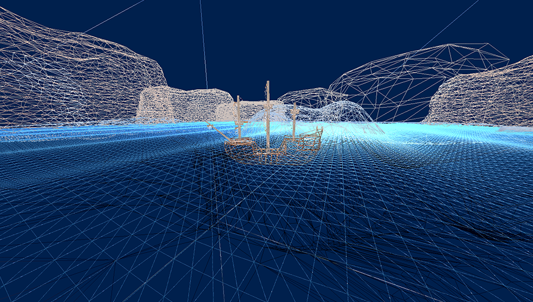
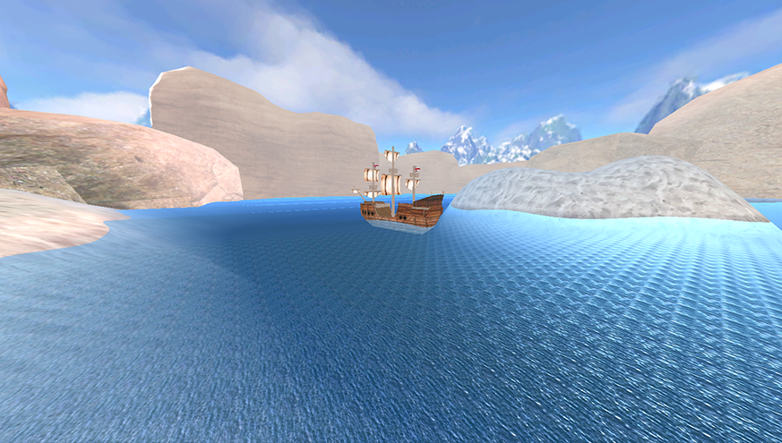
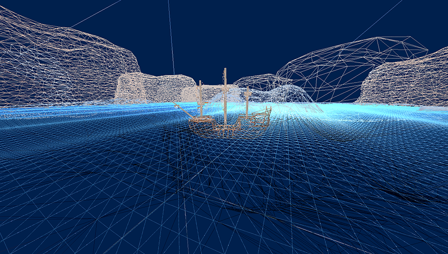
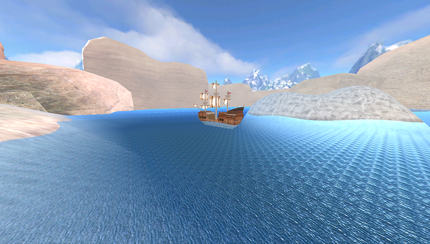

Summary
This project is a 3D Scene featuring a ship, water, land and rocks rendered using DirectX 11 and C++. This was my first experience using a programmable pipeline to render 3D objects, so I learned about using Vertex and Pixel shaders to achieve desired effects such as the water.
The application was developed over Semester 1 and 2 for my 'Further Game and Graphical System Development' module in my second year at university. The first semester was entirely focussed on rendering and loading assets, and the second semester was entirely focussed on implementing physics to the scene we had created in semester 1.
Features
Semester 1- Hierarchical Scene Graph / Loading Scene from JSON file
- Water Shader
- Diffuse, Ambient and Specular Lighting
- Specular and Normal mapping
- Texturing
- Ship Controller
- Ship Bouyancy (shader)
- First and Third person cameras
- Skybox
- Fog
- Velocity & Acceleration
- Gravity
- Friction
- Angular Velocity & Acceleration using Quaternions, Inertia and Torque (Rigidbody)
- Narrow Phase Collision Detection (AABB vs AABB, AABB vs Sphere, Sphere vs Sphere)
- Particle System
What I learned
The development of this application introduced me to using a programmable pipeline for 3D rendering (had previously only used Fixed Function). It was my first experience using DirectX, which was useful as I had only used OpenGL previously. I had to learn HLSL for writing shaders, which also taught me about how lighting is applied to objects. Finally, this improved my C++ and general programming skills, as I had to refactor code throughout the development to keep the code clean and maintainable.
Developing the project through the second semester taught me about using 3D maths to simulate physics in a game. It also taught me about collision detection, and object pooling when creating the particle system.